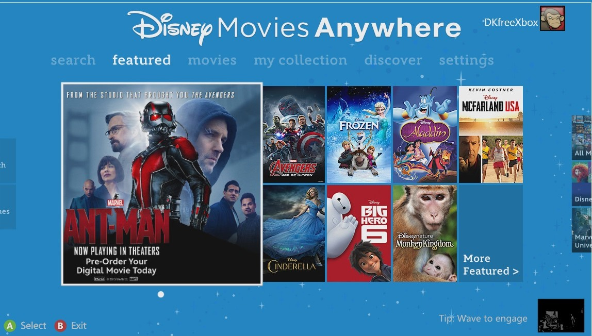
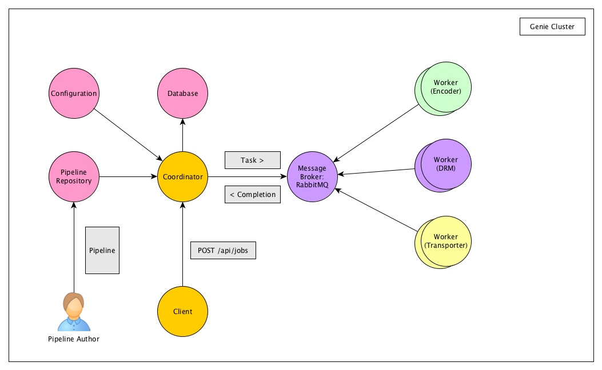
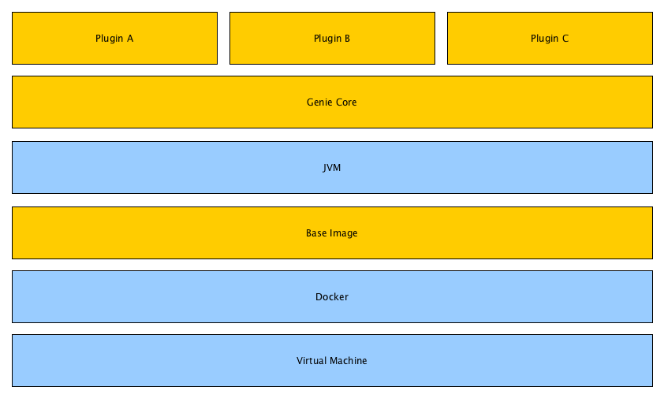

Introduction to Genie
Use ← → to move around
The Original Problem:
The Original Problem:
- We want to stream our movies over the internet.
- We want a high-quality viewing experience.
- We want to protect our movies from piracy.
- We want it to be fast.
The Solution
Genie
Genie
- General purpose distributed workflow engine
- Master/Worker model
- Worker nodes are completely stateless
- All communication between the Coordinator (Master) and workers is done through message queues.
- Supports both cloud and on-premise deployment.
- Workers can be written in any laguange.
Pipelines
Pipelines
- Defines the work to be done.
- Typically specified in YAML
- Composed of a set of atomic tasks.
- Provides an appropriate abstraction to execute in a distributed environment.
- Stored in a Git repo (versioning, permissions etc.)
Pipelines - Example
label: trailer pipeline
inputs:
- name: contentId
type: string
required: true
- name: source
type: string
required: true
tasks:
- label: Transcode the source
type: ffmpeg
node: encoder
retry: 2
timeout: 1h
options: [
-y,
-i, "${source}",
"${contentId}.mp4"
]
- label: Transport the trailer to the CDN
node: transporter
type: cdnUpload
file: "${contentId}.mp4"
path: "/trailers/${contentId}.mp4"
Task Handlers
Task Handlers
- Responsible for executing a pipeline task
- Can provide an output to be used by downstream tasks
- Exceptions bubble back to the Coordinator to decide what to do next: retry, stop the job etc.
- Hundreds of task handlers are already available for pipeline authors.
Task Handler - Example
public class RandomInt implements TaskHandler<Object> {
public Object handle (Task aTask) throws Exception {
int startInclusive = aTask.getInteger ("startInclusive", 0);
int endInclusive = aTask.getInteger ("endInclusive", 100);
return RandomUtils.nextInt (startInclusive, endInclusive);
}
}
Plugins
Plugins
- A way to extend Genie for a particular use-case without having to touch core.
- Typically a collection of task handlers.
- Gets bundled only with the worker configuration that requires it.
Custom Workers
Applications & Use Cases
- Streaming services: Movies Anywhere, Screening Room, Disney Life
- Package Devliery: DSS Package Validator
- Video Proxy: Wonderland, Marvel's 5th Kind, ChannelD (auditions), Delta, ReView
- Fingerprinting: FGS
- 4K, Subtitles conversion, "Split & Stitch" video transcoding, thumbnail generation and more...
- Battle tested on more 2.5M jobs to date.
Resources
- Repo: https://code.wds.io/tig/genie
- Docs: https://code.wds.io/tig/genie/blob/master/README.md
The End